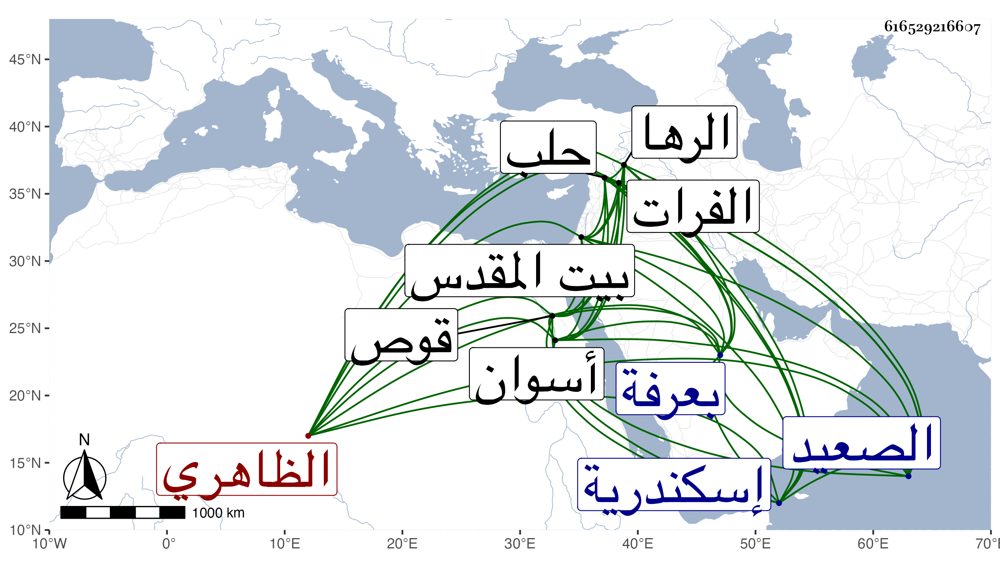

0902Sakhawi.DawLamic.ITO20230111-ara1.EIS1600.616529216607
Biography ID: 616529216607
1077
يشبك من مهدي الظاهري جقمق ويعرف بالصغير . كان ممن حج في سنة إحدى وخمسين هو وجماعة من إخوته كتغرى بردى القادري صحبة أمير الأول الطواشي عبد اللطيف مقدم المماليك واغاة طبقتهم واتفق في تلك السنة تناوش بعرفة بين جماعة الشريف والعرب الجالبين للغنم فكان فيما قاله لي ممن حجز بينهما بعد قتل جماعة من الطائفتين أكثرهم من العرب واستفتى القاضي سعد الدين بن الديري وكان قد حج في تلك السنة عن تحركهم للقتال في هذا اليوم فأفتاهم بما خفف به عنهم وبعد انتهاء الوقوف قال أنه وجد أعجميا أو نحوه وهو يبكي وينتحب ويلتمس من يرجع معه لعرفة ليأمن على نفسه في أخذ ما كان ستره من ماله بالأرض حين الوقعة خوفا عليه ويكون له النصف منه وأنه توجه في طائفة معه حتى أخذه وهو شيء كثير وأنهم سمحوا له بما وعدهم به فلم يأخذوا منه شيئا فالله أعلم ثم كان ممن قام بحفظ السبيل في دولة ابن أستاذه بل هو أنهض القائمين بذلك وأبدى حينئذ من الفروسية والشجاعة ما ذكر به من ثم ولذا كان ممن أمسك في أول ولاية الأشرف إينال ثم نفي إلى قوص ثم أعيد وصار بعد أحد الدوادارية الصغار وصاهر الأمين الأقصرائي على ابنة أخته أخت الإمام محب الدين ثم أرسله الظاهر خشقدم في أول سنة إحدى وسبعين كاشف الصعيد بأسره ونائب الوجه القبلي بكماله إلى أسوان بعد أن كانت هذه النيابة متروكة مدة وأنعم عليه معها بأمرة عشرة فباشر بحرمة وافرة بحيث مهد البلاد وأبطل أجواق مغاني العرب التي جرت عادة الكشاف باستصحابها معهم وجرت هناك حروب وخطوب بينه وبين عرب هوارة وأنكى فيهم وجرح بل اشرف على التلف ، وعين الظاهر لذلك تجريدة رأسها قرقماش أمير سلاح واشتد بأسه وكثرت أمواله وتزايدت وجاهته ثم كان ممن قام مع الأشرف قايتباي في السلطنة وشد عزمه لقبولها وهو الرسول منه إلى الظاهر تمربغا يأمره بالتوجه من القصر إلى البحرة وحينئذ استقر به في الدوادارية الكبرى عوضا عن خير بك الظاهري خشقدم وعول عليه في كل أمر وصار هو المرجع وبالغ في نصحه بحيث أنه رام حين ورد عن العسكر المجهز لسوار ما ورد التوجه لدفعه فمنعه السلطان لمسيس حاجته إليه فساعد في النفقة للتجريدة بحمل عشرين ألف دينار سوى ما أعطاه لبعض الأمراء وسوى ما قرره على أعيان المباشرين والرؤساء والخدام من الطواشية وهو شيء كبير كل على حسب مقامه ، ولمزيد وثوقه به كان هو المتوجه لمسك الظاهر تمربغا لما خرج والتوجه به إلى إسكندرية ثم كان هو باش العسكر المتوجه لدفع سوار واحتال حتى أحضره في طائفة ، وكان أمرا مهولا أفرده إمامه الشمس بن أجا بالجمع فبالغ ، وأضيف إليه الوزر فقطع ووصل ورفع وخفض وكذا أضيف إليه الأستادارية ، وبقوة بأسه كان فصل النزاع في عود الكنيسة التي زعم اليهود قدمها ببيت المقدس وهدمها المسلمون فأعيدت واعتذر هو عندي بأن قيامه ليس محبة فيهم ولكن للوفاء بعهدهم ، إلى غير ذلك من الحوادث كهدمه السبيل الذي أنشأه أمير سلاح جانبك الفقيه عند رأس سويقة منعم وغير خاطر السلطان عليه حتى نفي واستقر بعده في إمرة سلاح وأضيف إليه النظر على خانقتي سعيد السعداء والبيبرسية والصالح وما لا ينحصر ، وبالجملة فصارت الأمور كلها لا تخرج عنه وارتقى لما لم يصل إليه في وقتنا غيره من أبناء جنسه ، وكان مسكنه قبل الدوادارية قاعة الماس مقابل جامعه ثم بعدها أولا في بيت تمربغا المعروف ببيت منجك اليوسفي وأدخل فيه زيادات ضخمة من جهات متعددة كل زيادة منها دار إمرة على حدة ثم أخذ بيت قوصون المواجه لباب السلسلة وزاد فيه أيضا أزيد مما في الذي قبله وجعل له بابا من الشارع وبني وكالة بخان الخليلي وربعا وعمل بالقرب منه سبيلا ومدرسة ومقابل مدرسة حسن ربعا وحوضا وسبيلا للأموات ومكتبا للأيتام وما لا أنهض لشرحه وجرف من جامع آل ملك إلى الريدانية طولا وعرضا وأزال ما هناك من القبور فضلا عن غيرها وجعل ذلك ساباطا يعلوه مكعبا وعمل مزدرعات هناك وحفر بئرا عظيما يعلوه أربع سواق إلى غيرها من بحرة هائلة للتفرج وحوض كبير ثم يخرج من الساباط من باب عظيم إلى قبة عظيمة وتجاهها غيط حسن يصل للسميساطية فيه أشتال كثيرة وأنشأ قبلي هذه القبة تربة عظيمة جدا فيها شيخ وصوفية وتجاه التربة مدرسة وبجانبها سبيل للشرب وحوض للبهائم وبحرة عظيمة يجري الماء منها إلى مزدرعات وبالقرب من المطرية قبة هائلة وبجانبها مدرسة فيها خطبة وأماكن تفوق الوصف إلى غيرها مما لا ينحصر وصار ذلك من أبهج المتنزهات بحيث يتكرر نزول السلطان للقبة الثانية ومبيته بها بخواصه فمن دونهم ، ولا زال يسترسل في العمائر إلى أن اجتهد في سنة أربع وثمانين والتي بعدها بل والتي قبلهما في إلزام الناس بإصلاح الطرقات وتوسعتها وهدم الكثير مما أحدث أو كان قديما وتوعرت الطرقات إما بكثرة الهدم وارتدامها بالأتربة ونحوها أو بغيبة أرباب بعض الأماكن بحيث تصير الأماكن بعضها منخفض وبعضها مرتفع وتضرر المارة بهذا وعطب كثير من الناس والبهائم وربما يصرف على الغائب ثم يرجع عليه كالديون اللازمة إلى أن أصلحت عامة الشوارع والطرقات ووسعت وهدم لذلك كثير من الدور والحوانيت بحق وغيره بل ندب بعض قضاة السوء لذلك والحكم به ونشأ عن هذا تجريد جامع الصالح والفكاهين وزخرفتهما وظهرت أماكن كانت خفيت وقد وقع شيء من هذا في الجملة أول سنة ست وأربعين وكان ناظرا لما يذكر به دهرا مع الصدقات المنتشرة والصلات الغزيرة والرغبة في الفات ذوي الفضائل والفنون إليه ومباحثتهم وإلقاء المسائل عليهم وعلو الهمة ومزيد الشهامة ومتين التصور والفهم وسرعة الحركة ومحبة الثناء عليه ولذا كثر مادحه وتحصل الكتب النفيسة شراء واستكتابا ولو شرحت تفصيل ما أجملته لكان مجلدا ، وقد تكرر اجتماعي به وكان حريصا على ذلك بحيث رغب في تحصيل أشياء من تصانيفي وأسمع بعض أولاده مني بحضرته المسلسل ولو وافقت على مزيد الاجتماع به لتزايد إقباله ولكن الخيرة فيما قدر . ولم يزل على عظمته إلى أن سافر باشا لعسكر هائل إلى حلب بعد اجتماع سائر العساكر الشامية وما أضيف إليها بها واقتضى رأيه المسير للبلاد العراقية فقطع الفرات وتوجه إلى الرها فكان ضرب عنقه صبرا على يد أحد أمراء يعقوب بن حسن باك في رمضان سنة خمس وثمانين وجيء بجثته في أثناء ذي القعدة فتلقاها السلطان وجميع المقدمين فمن دونهم ودفنت بتربته المشار إليها وارتجت النواحي لقتله وكان سفره بعد أن نظر في حال الضعفاء وصرف لأهل المؤيدية نحو سنتين ثم لأهل سعيد السعداء سنة فما دونها ثم للبيبرسية ثلث سنة وتأسى به غيره من النظار في ذلك وعتق جملة من مماليكه وربما تحدث بانكساره وكثيرا ما كان يصرح بأنه لا يخضع لغير الأشرف وأفعاله شاهدة لذلك عفا الله عنه وإيانا .
